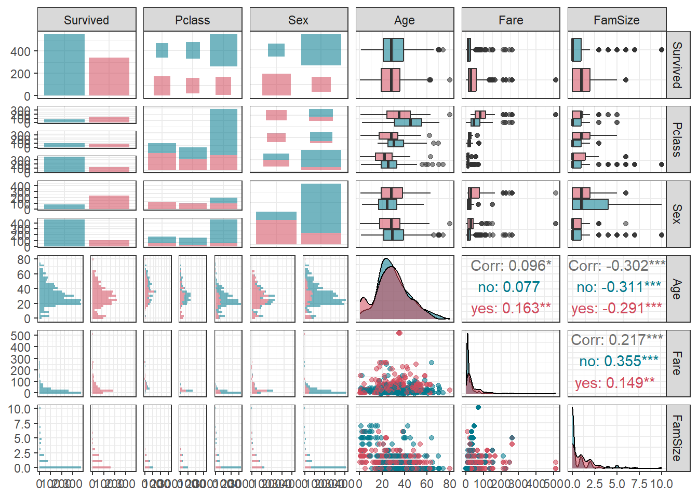
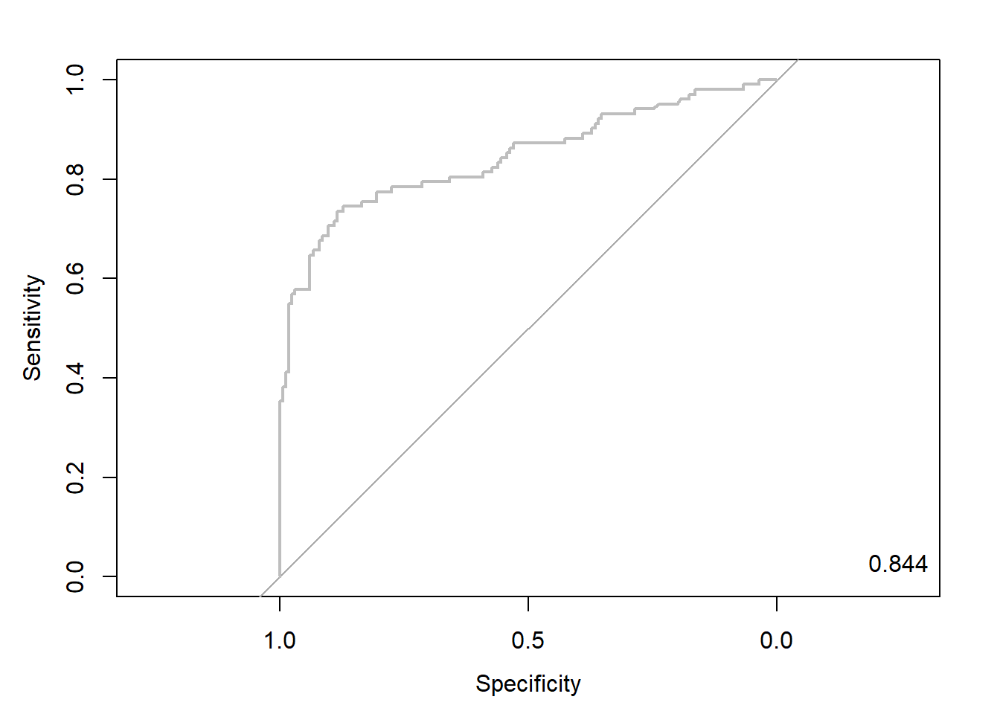

pacman::p_load("data.table",
"tidyverse",
"dplyr", "tidyr",
"ggplot2", "GGally",
"caret",
"doParallel", "parallel") # For 병렬 처리
registerDoParallel(cores=detectCores()) # 사용할 Core 개수 지정
titanic <- fread("../Titanic.csv") # 데이터 불러오기
titanic %>%
as_tibble7 LASSO Regression
LASSO Regression의 장점
- 규제항을 통해 회귀계수를 “0”으로 추정하기 때문에 변수 선택이 가능하다.
LASSO Regression의 단점
- 예측 변수의 개수가 표본의 크기보다 큰 경우, 볼록 최적화 문제의 특성 때문에 표본의 크기보다 많은 예측 변수를 선택할 수 없다.
- 예측 변수 사이에 어떤 그룹 구조(쌍별 상관 관계가 매우 높은)가 있을 때, 그룹에서 하나의 예측 변수만 선택한다.
- 예측 변수의 개수가 표본의 크기보다 큰 상황에서 예측 변수들이 높은 상관관계를 가지고 있을 때,
Ridge Regression보다 예측 성능이 낮다.
실습 자료 : 1912년 4월 15일 타이타닉호 침몰 당시 탑승객들의 정보를 기록한 데이터셋이며, 총 11개의 변수를 포함하고 있다. 이 자료에서 Target은
Survived이다.


7.1 데이터 불러오기
# A tibble: 891 × 11
Survived Pclass Name Sex Age SibSp Parch Ticket Fare Cabin Embarked
<int> <int> <chr> <chr> <dbl> <int> <int> <chr> <dbl> <chr> <chr>
1 0 3 Braund, Mr. Owen Harris male 22 1 0 A/5 21171 7.25 "" S
2 1 1 Cumings, Mrs. John Bradley (Florence Briggs Thayer) female 38 1 0 PC 17599 71.3 "C85" C
3 1 3 Heikkinen, Miss. Laina female 26 0 0 STON/O2. 3101282 7.92 "" S
4 1 1 Futrelle, Mrs. Jacques Heath (Lily May Peel) female 35 1 0 113803 53.1 "C123" S
5 0 3 Allen, Mr. William Henry male 35 0 0 373450 8.05 "" S
6 0 3 Moran, Mr. James male NA 0 0 330877 8.46 "" Q
7 0 1 McCarthy, Mr. Timothy J male 54 0 0 17463 51.9 "E46" S
8 0 3 Palsson, Master. Gosta Leonard male 2 3 1 349909 21.1 "" S
9 1 3 Johnson, Mrs. Oscar W (Elisabeth Vilhelmina Berg) female 27 0 2 347742 11.1 "" S
10 1 2 Nasser, Mrs. Nicholas (Adele Achem) female 14 1 0 237736 30.1 "" C
# ℹ 881 more rows7.2 데이터 전처리 I
titanic %<>%
data.frame() %>% # Data Frame 형태로 변환
mutate(Survived = ifelse(Survived == 1, "yes", "no")) # Target을 문자형 변수로 변환
# 1. Convert to Factor
fac.col <- c("Pclass", "Sex",
# Target
"Survived")
titanic <- titanic %>%
mutate_at(fac.col, as.factor) # 범주형으로 변환
glimpse(titanic) # 데이터 구조 확인Rows: 891
Columns: 11
$ Survived <fct> no, yes, yes, yes, no, no, no, no, yes, yes, yes, yes, no, no, no, yes, no, yes, no, yes, no, yes, yes, yes, no, yes, no, no, yes, no, no, yes, yes, no, no, no, yes, no, no, yes, no…
$ Pclass <fct> 3, 1, 3, 1, 3, 3, 1, 3, 3, 2, 3, 1, 3, 3, 3, 2, 3, 2, 3, 3, 2, 2, 3, 1, 3, 3, 3, 1, 3, 3, 1, 1, 3, 2, 1, 1, 3, 3, 3, 3, 3, 2, 3, 2, 3, 3, 3, 3, 3, 3, 3, 3, 1, 2, 1, 1, 2, 3, 2, 3, 3…
$ Name <chr> "Braund, Mr. Owen Harris", "Cumings, Mrs. John Bradley (Florence Briggs Thayer)", "Heikkinen, Miss. Laina", "Futrelle, Mrs. Jacques Heath (Lily May Peel)", "Allen, Mr. William Henry…
$ Sex <fct> male, female, female, female, male, male, male, male, female, female, female, female, male, male, female, female, male, male, female, female, male, male, female, male, female, femal…
$ Age <dbl> 22.0, 38.0, 26.0, 35.0, 35.0, NA, 54.0, 2.0, 27.0, 14.0, 4.0, 58.0, 20.0, 39.0, 14.0, 55.0, 2.0, NA, 31.0, NA, 35.0, 34.0, 15.0, 28.0, 8.0, 38.0, NA, 19.0, NA, NA, 40.0, NA, NA, 66.…
$ SibSp <int> 1, 1, 0, 1, 0, 0, 0, 3, 0, 1, 1, 0, 0, 1, 0, 0, 4, 0, 1, 0, 0, 0, 0, 0, 3, 1, 0, 3, 0, 0, 0, 1, 0, 0, 1, 1, 0, 0, 2, 1, 1, 1, 0, 1, 0, 0, 1, 0, 2, 1, 4, 0, 1, 1, 0, 0, 0, 0, 1, 5, 0…
$ Parch <int> 0, 0, 0, 0, 0, 0, 0, 1, 2, 0, 1, 0, 0, 5, 0, 0, 1, 0, 0, 0, 0, 0, 0, 0, 1, 5, 0, 2, 0, 0, 0, 0, 0, 0, 0, 0, 0, 0, 0, 0, 0, 0, 0, 2, 0, 0, 0, 0, 0, 0, 1, 0, 0, 0, 1, 0, 0, 0, 2, 2, 0…
$ Ticket <chr> "A/5 21171", "PC 17599", "STON/O2. 3101282", "113803", "373450", "330877", "17463", "349909", "347742", "237736", "PP 9549", "113783", "A/5. 2151", "347082", "350406", "248706", "38…
$ Fare <dbl> 7.2500, 71.2833, 7.9250, 53.1000, 8.0500, 8.4583, 51.8625, 21.0750, 11.1333, 30.0708, 16.7000, 26.5500, 8.0500, 31.2750, 7.8542, 16.0000, 29.1250, 13.0000, 18.0000, 7.2250, 26.0000,…
$ Cabin <chr> "", "C85", "", "C123", "", "", "E46", "", "", "", "G6", "C103", "", "", "", "", "", "", "", "", "", "D56", "", "A6", "", "", "", "C23 C25 C27", "", "", "", "B78", "", "", "", "", ""…
$ Embarked <chr> "S", "C", "S", "S", "S", "Q", "S", "S", "S", "C", "S", "S", "S", "S", "S", "S", "Q", "S", "S", "C", "S", "S", "Q", "S", "S", "S", "C", "S", "Q", "S", "C", "C", "Q", "S", "C", "S", "…# 2. Generate New Variable
titanic <- titanic %>%
mutate(FamSize = SibSp + Parch) # "FamSize = 형제 및 배우자 수 + 부모님 및 자녀 수"로 가족 수를 의미하는 새로운 변수
glimpse(titanic) # 데이터 구조 확인Rows: 891
Columns: 12
$ Survived <fct> no, yes, yes, yes, no, no, no, no, yes, yes, yes, yes, no, no, no, yes, no, yes, no, yes, no, yes, yes, yes, no, yes, no, no, yes, no, no, yes, yes, no, no, no, yes, no, no, yes, no…
$ Pclass <fct> 3, 1, 3, 1, 3, 3, 1, 3, 3, 2, 3, 1, 3, 3, 3, 2, 3, 2, 3, 3, 2, 2, 3, 1, 3, 3, 3, 1, 3, 3, 1, 1, 3, 2, 1, 1, 3, 3, 3, 3, 3, 2, 3, 2, 3, 3, 3, 3, 3, 3, 3, 3, 1, 2, 1, 1, 2, 3, 2, 3, 3…
$ Name <chr> "Braund, Mr. Owen Harris", "Cumings, Mrs. John Bradley (Florence Briggs Thayer)", "Heikkinen, Miss. Laina", "Futrelle, Mrs. Jacques Heath (Lily May Peel)", "Allen, Mr. William Henry…
$ Sex <fct> male, female, female, female, male, male, male, male, female, female, female, female, male, male, female, female, male, male, female, female, male, male, female, male, female, femal…
$ Age <dbl> 22.0, 38.0, 26.0, 35.0, 35.0, NA, 54.0, 2.0, 27.0, 14.0, 4.0, 58.0, 20.0, 39.0, 14.0, 55.0, 2.0, NA, 31.0, NA, 35.0, 34.0, 15.0, 28.0, 8.0, 38.0, NA, 19.0, NA, NA, 40.0, NA, NA, 66.…
$ SibSp <int> 1, 1, 0, 1, 0, 0, 0, 3, 0, 1, 1, 0, 0, 1, 0, 0, 4, 0, 1, 0, 0, 0, 0, 0, 3, 1, 0, 3, 0, 0, 0, 1, 0, 0, 1, 1, 0, 0, 2, 1, 1, 1, 0, 1, 0, 0, 1, 0, 2, 1, 4, 0, 1, 1, 0, 0, 0, 0, 1, 5, 0…
$ Parch <int> 0, 0, 0, 0, 0, 0, 0, 1, 2, 0, 1, 0, 0, 5, 0, 0, 1, 0, 0, 0, 0, 0, 0, 0, 1, 5, 0, 2, 0, 0, 0, 0, 0, 0, 0, 0, 0, 0, 0, 0, 0, 0, 0, 2, 0, 0, 0, 0, 0, 0, 1, 0, 0, 0, 1, 0, 0, 0, 2, 2, 0…
$ Ticket <chr> "A/5 21171", "PC 17599", "STON/O2. 3101282", "113803", "373450", "330877", "17463", "349909", "347742", "237736", "PP 9549", "113783", "A/5. 2151", "347082", "350406", "248706", "38…
$ Fare <dbl> 7.2500, 71.2833, 7.9250, 53.1000, 8.0500, 8.4583, 51.8625, 21.0750, 11.1333, 30.0708, 16.7000, 26.5500, 8.0500, 31.2750, 7.8542, 16.0000, 29.1250, 13.0000, 18.0000, 7.2250, 26.0000,…
$ Cabin <chr> "", "C85", "", "C123", "", "", "E46", "", "", "", "G6", "C103", "", "", "", "", "", "", "", "", "", "D56", "", "A6", "", "", "", "C23 C25 C27", "", "", "", "B78", "", "", "", "", ""…
$ Embarked <chr> "S", "C", "S", "S", "S", "Q", "S", "S", "S", "C", "S", "S", "S", "S", "S", "S", "Q", "S", "S", "C", "S", "S", "Q", "S", "S", "S", "C", "S", "Q", "S", "C", "C", "Q", "S", "C", "S", "…
$ FamSize <int> 1, 1, 0, 1, 0, 0, 0, 4, 2, 1, 2, 0, 0, 6, 0, 0, 5, 0, 1, 0, 0, 0, 0, 0, 4, 6, 0, 5, 0, 0, 0, 1, 0, 0, 1, 1, 0, 0, 2, 1, 1, 1, 0, 3, 0, 0, 1, 0, 2, 1, 5, 0, 1, 1, 1, 0, 0, 0, 3, 7, 0…# 3. Select Variables used for Analysis
titanic1 <- titanic %>%
select(Survived, Pclass, Sex, Age, Fare, FamSize) # 분석에 사용할 변수 선택
titanic1 %>%
as_tibble# A tibble: 891 × 6
Survived Pclass Sex Age Fare FamSize
<fct> <fct> <fct> <dbl> <dbl> <int>
1 no 3 male 22 7.25 1
2 yes 1 female 38 71.3 1
3 yes 3 female 26 7.92 0
4 yes 1 female 35 53.1 1
5 no 3 male 35 8.05 0
6 no 3 male NA 8.46 0
7 no 1 male 54 51.9 0
8 no 3 male 2 21.1 4
9 yes 3 female 27 11.1 2
10 yes 2 female 14 30.1 1
# ℹ 881 more rows7.3 데이터 탐색
ggpairs(titanic1,
aes(colour = Survived)) + # Target의 범주에 따라 색깔을 다르게 표현
theme_bw()
ggpairs(titanic1,
aes(colour = Survived, alpha = 0.8)) + # Target의 범주에 따라 색깔을 다르게 표현
scale_colour_manual(values = c("#00798c", "#d1495b")) + # 특정 색깔 지정
scale_fill_manual(values = c("#00798c", "#d1495b")) + # 특정 색깔 지정
theme_bw()
7.4 데이터 분할
# Partition (Training Dataset : Test Dataset = 7:3)
y <- titanic1$Survived # Target
set.seed(200)
ind <- createDataPartition(y, p = 0.7, list =T) # Index를 이용하여 7:3으로 분할
titanic.trd <- titanic1[ind$Resample1,] # Training Dataset
titanic.ted <- titanic1[-ind$Resample1,] # Test Dataset7.5 데이터 전처리 II
# Imputation
titanic.trd.Imp <- titanic.trd %>%
mutate(Age = replace_na(Age, mean(Age, na.rm = TRUE))) # 평균으로 결측값 대체
titanic.ted.Imp <- titanic.ted %>%
mutate(Age = replace_na(Age, mean(titanic.trd$Age, na.rm = TRUE))) # Training Dataset을 이용하여 결측값 대체
glimpse(titanic.trd.Imp) # 데이터 구조 확인Rows: 625
Columns: 6
$ Survived <fct> no, yes, yes, no, no, no, yes, yes, yes, yes, no, no, yes, no, yes, no, yes, no, no, no, yes, no, no, yes, yes, no, no, no, no, no, yes, no, no, no, yes, no, yes, no, no, no, yes, n…
$ Pclass <fct> 3, 3, 1, 3, 3, 3, 3, 2, 3, 1, 3, 3, 2, 3, 3, 2, 1, 3, 3, 1, 3, 3, 1, 1, 3, 2, 1, 1, 3, 3, 3, 3, 2, 3, 3, 3, 3, 3, 3, 3, 1, 1, 1, 3, 3, 1, 3, 1, 3, 3, 3, 3, 3, 3, 2, 3, 3, 3, 1, 2, 3…
$ Sex <fct> male, female, female, male, male, male, female, female, female, female, male, female, male, female, female, male, male, female, male, male, female, male, male, female, female, male,…
$ Age <dbl> 22.00000, 26.00000, 35.00000, 35.00000, 29.93737, 2.00000, 27.00000, 14.00000, 4.00000, 58.00000, 39.00000, 14.00000, 29.93737, 31.00000, 29.93737, 35.00000, 28.00000, 8.00000, 29.9…
$ Fare <dbl> 7.2500, 7.9250, 53.1000, 8.0500, 8.4583, 21.0750, 11.1333, 30.0708, 16.7000, 26.5500, 31.2750, 7.8542, 13.0000, 18.0000, 7.2250, 26.0000, 35.5000, 21.0750, 7.2250, 263.0000, 7.8792,…
$ FamSize <int> 1, 0, 1, 0, 0, 4, 2, 1, 2, 0, 6, 0, 0, 1, 0, 0, 0, 4, 0, 5, 0, 0, 0, 1, 0, 0, 1, 1, 0, 2, 1, 1, 1, 0, 0, 1, 0, 2, 1, 5, 1, 1, 0, 7, 0, 0, 5, 0, 2, 7, 1, 0, 0, 0, 2, 0, 0, 0, 0, 0, 3…glimpse(titanic.ted.Imp) # 데이터 구조 확인Rows: 266
Columns: 6
$ Survived <fct> yes, no, no, yes, no, yes, yes, yes, yes, yes, no, no, yes, yes, no, yes, no, yes, yes, no, yes, no, no, no, no, no, no, yes, yes, no, no, no, no, no, no, no, no, no, no, yes, no, n…
$ Pclass <fct> 1, 1, 3, 2, 3, 2, 3, 3, 3, 2, 3, 3, 2, 2, 3, 2, 1, 3, 2, 3, 3, 2, 2, 3, 3, 3, 3, 1, 2, 2, 3, 3, 3, 3, 3, 2, 3, 2, 2, 2, 3, 3, 2, 1, 3, 1, 3, 2, 1, 3, 3, 3, 3, 3, 3, 3, 3, 1, 3, 1, 3…
$ Sex <fct> female, male, male, female, male, male, female, female, male, female, male, male, female, female, male, female, male, male, female, male, female, male, male, male, male, male, male,…
$ Age <dbl> 38.00000, 54.00000, 20.00000, 55.00000, 2.00000, 34.00000, 15.00000, 38.00000, 29.93737, 3.00000, 29.93737, 21.00000, 29.00000, 21.00000, 28.50000, 5.00000, 45.00000, 29.93737, 29.0…
$ Fare <dbl> 71.2833, 51.8625, 8.0500, 16.0000, 29.1250, 13.0000, 8.0292, 31.3875, 7.2292, 41.5792, 8.0500, 7.8000, 26.0000, 10.5000, 7.2292, 27.7500, 83.4750, 15.2458, 10.5000, 8.1583, 7.9250, …
$ FamSize <int> 1, 0, 0, 0, 5, 0, 0, 6, 0, 3, 0, 0, 1, 0, 0, 3, 1, 2, 0, 0, 6, 0, 0, 0, 0, 4, 0, 1, 1, 1, 0, 0, 0, 0, 0, 1, 6, 2, 1, 0, 0, 1, 0, 2, 0, 0, 0, 0, 1, 0, 0, 1, 5, 2, 5, 0, 5, 0, 4, 0, 6…7.6 모형 훈련
Package "caret"은 통합 API를 통해 R로 기계 학습을 실행할 수 있는 매우 실용적인 방법을 제공한다. Package "caret"를 통해 LASSO Regression을 수행하기 위해 옵션 method에 다양한 방법(Ex: "lasso", "blasso" 등)을 입력할 수 있지만, 대부분 회귀 문제에 대해서만 분석이 가능하다. 분류와 회귀 문제 모두 가능한 "glmnet"을 이용하려면 옵션 tuneGrid = expand.grid()을 통해 탐색하고자 하는 초모수 lambda의 범위를 직접 지정해줘야 한다.
fitControl <- trainControl(method = "cv", number = 5, # 5-Fold Cross Validation (5-Fold CV)
allowParallel = TRUE) # 병렬 처리
set.seed(200) # For CV
lasso.fit <- train(Survived ~ ., data = titanic.trd.Imp,
trControl = fitControl ,
method = "glmnet",
tuneGrid = expand.grid(alpha = 1, # For LASSO Regression
lambda = seq(0, 1, 0.001)), # lambda의 탐색 범위
preProc = c("center", "scale")) # Standardization for 예측 변수
lasso.fitglmnet
625 samples
5 predictor
2 classes: 'no', 'yes'
Pre-processing: centered (6), scaled (6)
Resampling: Cross-Validated (5 fold)
Summary of sample sizes: 500, 500, 500, 500, 500
Resampling results across tuning parameters:
lambda Accuracy Kappa
0.000 0.7840 0.53787566
0.001 0.7840 0.53787566
0.002 0.7888 0.54713361
0.003 0.7888 0.54587635
0.004 0.7840 0.53373303
0.005 0.7872 0.53898823
0.006 0.7840 0.53197659
0.007 0.7840 0.53197400
0.008 0.7856 0.53507154
0.009 0.7856 0.53507154
0.010 0.7840 0.53132186
0.011 0.7840 0.53132186
0.012 0.7840 0.53067201
0.013 0.7840 0.53067201
0.014 0.7856 0.53379173
0.015 0.7872 0.53754141
0.016 0.7872 0.53754141
0.017 0.7872 0.53754141
0.018 0.7856 0.53447375
0.019 0.7856 0.53539055
0.020 0.7872 0.53933256
0.021 0.7920 0.54927750
0.022 0.7936 0.55318733
0.023 0.7920 0.55005371
0.024 0.7904 0.54630152
0.025 0.7904 0.54633807
0.026 0.7904 0.54633807
0.027 0.7872 0.54007357
0.028 0.7872 0.54076382
0.029 0.7856 0.53773701
0.030 0.7776 0.52231065
0.031 0.7776 0.52231065
0.032 0.7776 0.52231065
0.033 0.7760 0.51930816
0.034 0.7760 0.52015488
0.035 0.7760 0.52015488
0.036 0.7728 0.51413374
0.037 0.7712 0.51115833
0.038 0.7712 0.51115833
0.039 0.7712 0.51115833
0.040 0.7712 0.51115833
0.041 0.7712 0.51115833
0.042 0.7712 0.51115833
0.043 0.7712 0.51115833
0.044 0.7712 0.51115833
0.045 0.7712 0.51115833
0.046 0.7728 0.51499913
0.047 0.7728 0.51499913
0.048 0.7728 0.51499913
0.049 0.7728 0.51499913
0.050 0.7728 0.51499913
0.051 0.7728 0.51499913
0.052 0.7728 0.51499913
0.053 0.7728 0.51499913
0.054 0.7728 0.51499913
0.055 0.7728 0.51499913
0.056 0.7728 0.51499913
0.057 0.7728 0.51499913
0.058 0.7728 0.51499913
0.059 0.7728 0.51499913
0.060 0.7728 0.51499913
0.061 0.7728 0.51499913
0.062 0.7728 0.51499913
0.063 0.7728 0.51499913
0.064 0.7728 0.51499913
0.065 0.7728 0.51499913
0.066 0.7728 0.51499913
0.067 0.7728 0.51499913
0.068 0.7728 0.51499913
0.069 0.7728 0.51499913
0.070 0.7728 0.51499913
0.071 0.7728 0.51499913
0.072 0.7728 0.51499913
0.073 0.7728 0.51499913
0.074 0.7728 0.51499913
0.075 0.7728 0.51499913
0.076 0.7728 0.51499913
0.077 0.7728 0.51499913
0.078 0.7728 0.51499913
0.079 0.7728 0.51499913
0.080 0.7728 0.51499913
0.081 0.7728 0.51499913
0.082 0.7728 0.51499913
0.083 0.7728 0.51499913
0.084 0.7728 0.51499913
0.085 0.7728 0.51499913
0.086 0.7728 0.51499913
0.087 0.7728 0.51499913
0.088 0.7728 0.51499913
0.089 0.7728 0.51499913
0.090 0.7728 0.51499913
0.091 0.7728 0.51499913
0.092 0.7728 0.51499913
0.093 0.7728 0.51499913
0.094 0.7728 0.51499913
0.095 0.7728 0.51499913
0.096 0.7728 0.51499913
0.097 0.7728 0.51499913
0.098 0.7728 0.51499913
0.099 0.7728 0.51499913
0.100 0.7728 0.51499913
0.101 0.7728 0.51499913
0.102 0.7728 0.51499913
0.103 0.7728 0.51499913
0.104 0.7728 0.51499913
0.105 0.7728 0.51499913
0.106 0.7728 0.51499913
0.107 0.7728 0.51499913
0.108 0.7728 0.51499913
0.109 0.7728 0.51499913
0.110 0.7728 0.51499913
0.111 0.7728 0.51499913
0.112 0.7728 0.51499913
0.113 0.7728 0.51499913
0.114 0.7728 0.51499913
0.115 0.7728 0.51499913
0.116 0.7728 0.51499913
0.117 0.7728 0.51499913
0.118 0.7728 0.51499913
0.119 0.7728 0.51499913
0.120 0.7728 0.51499913
0.121 0.7728 0.51499913
0.122 0.7728 0.51499913
0.123 0.7728 0.51499913
0.124 0.7728 0.51499913
0.125 0.7728 0.51499913
0.126 0.7728 0.51499913
0.127 0.7728 0.51499913
0.128 0.7728 0.51499913
0.129 0.7728 0.51499913
0.130 0.7728 0.51499913
0.131 0.7728 0.51499913
0.132 0.7728 0.51499913
0.133 0.7680 0.49535288
0.134 0.7680 0.49535288
0.135 0.7680 0.49535288
0.136 0.7680 0.49535288
0.137 0.7680 0.49535288
0.138 0.7680 0.49535288
0.139 0.7680 0.49535288
0.140 0.7680 0.49535288
0.141 0.7680 0.49535288
0.142 0.7616 0.46904664
0.143 0.7616 0.46904664
0.144 0.7616 0.46904664
0.145 0.7616 0.46904664
0.146 0.7616 0.46904664
0.147 0.7616 0.46904664
0.148 0.7616 0.46904664
0.149 0.7616 0.46904664
0.150 0.7616 0.46904664
0.151 0.7616 0.46904664
0.152 0.7616 0.46904664
0.153 0.7616 0.46904664
0.154 0.7616 0.46904664
0.155 0.7616 0.46904664
0.156 0.7248 0.35460447
0.157 0.7248 0.35460447
0.158 0.7248 0.35460447
0.159 0.7248 0.35460447
0.160 0.7248 0.35460447
0.161 0.7248 0.35460447
0.162 0.6944 0.26430337
0.163 0.6944 0.26430337
0.164 0.6672 0.18156771
0.165 0.6672 0.18156771
0.166 0.6672 0.18156771
0.167 0.6672 0.18156771
0.168 0.6384 0.08223885
0.169 0.6384 0.08223885
0.170 0.6384 0.08223885
0.171 0.6384 0.08223885
0.172 0.6384 0.08223885
0.173 0.6384 0.08223885
0.174 0.6160 0.00000000
0.175 0.6160 0.00000000
0.176 0.6160 0.00000000
0.177 0.6160 0.00000000
0.178 0.6160 0.00000000
0.179 0.6160 0.00000000
0.180 0.6160 0.00000000
0.181 0.6160 0.00000000
0.182 0.6160 0.00000000
0.183 0.6160 0.00000000
0.184 0.6160 0.00000000
0.185 0.6160 0.00000000
0.186 0.6160 0.00000000
0.187 0.6160 0.00000000
0.188 0.6160 0.00000000
0.189 0.6160 0.00000000
0.190 0.6160 0.00000000
0.191 0.6160 0.00000000
0.192 0.6160 0.00000000
0.193 0.6160 0.00000000
0.194 0.6160 0.00000000
0.195 0.6160 0.00000000
0.196 0.6160 0.00000000
0.197 0.6160 0.00000000
0.198 0.6160 0.00000000
0.199 0.6160 0.00000000
0.200 0.6160 0.00000000
0.201 0.6160 0.00000000
0.202 0.6160 0.00000000
0.203 0.6160 0.00000000
0.204 0.6160 0.00000000
0.205 0.6160 0.00000000
0.206 0.6160 0.00000000
0.207 0.6160 0.00000000
0.208 0.6160 0.00000000
0.209 0.6160 0.00000000
0.210 0.6160 0.00000000
0.211 0.6160 0.00000000
0.212 0.6160 0.00000000
0.213 0.6160 0.00000000
0.214 0.6160 0.00000000
0.215 0.6160 0.00000000
0.216 0.6160 0.00000000
0.217 0.6160 0.00000000
0.218 0.6160 0.00000000
0.219 0.6160 0.00000000
0.220 0.6160 0.00000000
0.221 0.6160 0.00000000
0.222 0.6160 0.00000000
0.223 0.6160 0.00000000
0.224 0.6160 0.00000000
0.225 0.6160 0.00000000
0.226 0.6160 0.00000000
0.227 0.6160 0.00000000
0.228 0.6160 0.00000000
0.229 0.6160 0.00000000
0.230 0.6160 0.00000000
0.231 0.6160 0.00000000
0.232 0.6160 0.00000000
0.233 0.6160 0.00000000
0.234 0.6160 0.00000000
0.235 0.6160 0.00000000
0.236 0.6160 0.00000000
0.237 0.6160 0.00000000
0.238 0.6160 0.00000000
0.239 0.6160 0.00000000
0.240 0.6160 0.00000000
0.241 0.6160 0.00000000
0.242 0.6160 0.00000000
0.243 0.6160 0.00000000
0.244 0.6160 0.00000000
0.245 0.6160 0.00000000
0.246 0.6160 0.00000000
0.247 0.6160 0.00000000
0.248 0.6160 0.00000000
0.249 0.6160 0.00000000
0.250 0.6160 0.00000000
0.251 0.6160 0.00000000
0.252 0.6160 0.00000000
0.253 0.6160 0.00000000
0.254 0.6160 0.00000000
0.255 0.6160 0.00000000
0.256 0.6160 0.00000000
0.257 0.6160 0.00000000
0.258 0.6160 0.00000000
0.259 0.6160 0.00000000
0.260 0.6160 0.00000000
0.261 0.6160 0.00000000
0.262 0.6160 0.00000000
0.263 0.6160 0.00000000
0.264 0.6160 0.00000000
0.265 0.6160 0.00000000
0.266 0.6160 0.00000000
0.267 0.6160 0.00000000
0.268 0.6160 0.00000000
0.269 0.6160 0.00000000
0.270 0.6160 0.00000000
0.271 0.6160 0.00000000
0.272 0.6160 0.00000000
0.273 0.6160 0.00000000
0.274 0.6160 0.00000000
0.275 0.6160 0.00000000
0.276 0.6160 0.00000000
0.277 0.6160 0.00000000
0.278 0.6160 0.00000000
0.279 0.6160 0.00000000
0.280 0.6160 0.00000000
0.281 0.6160 0.00000000
0.282 0.6160 0.00000000
0.283 0.6160 0.00000000
0.284 0.6160 0.00000000
0.285 0.6160 0.00000000
0.286 0.6160 0.00000000
0.287 0.6160 0.00000000
0.288 0.6160 0.00000000
0.289 0.6160 0.00000000
0.290 0.6160 0.00000000
0.291 0.6160 0.00000000
0.292 0.6160 0.00000000
0.293 0.6160 0.00000000
0.294 0.6160 0.00000000
0.295 0.6160 0.00000000
0.296 0.6160 0.00000000
0.297 0.6160 0.00000000
0.298 0.6160 0.00000000
0.299 0.6160 0.00000000
0.300 0.6160 0.00000000
0.301 0.6160 0.00000000
0.302 0.6160 0.00000000
0.303 0.6160 0.00000000
0.304 0.6160 0.00000000
0.305 0.6160 0.00000000
0.306 0.6160 0.00000000
0.307 0.6160 0.00000000
0.308 0.6160 0.00000000
0.309 0.6160 0.00000000
0.310 0.6160 0.00000000
0.311 0.6160 0.00000000
0.312 0.6160 0.00000000
0.313 0.6160 0.00000000
0.314 0.6160 0.00000000
0.315 0.6160 0.00000000
0.316 0.6160 0.00000000
0.317 0.6160 0.00000000
0.318 0.6160 0.00000000
0.319 0.6160 0.00000000
0.320 0.6160 0.00000000
0.321 0.6160 0.00000000
0.322 0.6160 0.00000000
0.323 0.6160 0.00000000
0.324 0.6160 0.00000000
0.325 0.6160 0.00000000
0.326 0.6160 0.00000000
0.327 0.6160 0.00000000
0.328 0.6160 0.00000000
0.329 0.6160 0.00000000
0.330 0.6160 0.00000000
0.331 0.6160 0.00000000
0.332 0.6160 0.00000000
0.333 0.6160 0.00000000
0.334 0.6160 0.00000000
0.335 0.6160 0.00000000
0.336 0.6160 0.00000000
0.337 0.6160 0.00000000
0.338 0.6160 0.00000000
0.339 0.6160 0.00000000
0.340 0.6160 0.00000000
0.341 0.6160 0.00000000
0.342 0.6160 0.00000000
0.343 0.6160 0.00000000
0.344 0.6160 0.00000000
0.345 0.6160 0.00000000
0.346 0.6160 0.00000000
0.347 0.6160 0.00000000
0.348 0.6160 0.00000000
0.349 0.6160 0.00000000
0.350 0.6160 0.00000000
0.351 0.6160 0.00000000
0.352 0.6160 0.00000000
0.353 0.6160 0.00000000
0.354 0.6160 0.00000000
0.355 0.6160 0.00000000
0.356 0.6160 0.00000000
0.357 0.6160 0.00000000
0.358 0.6160 0.00000000
0.359 0.6160 0.00000000
0.360 0.6160 0.00000000
0.361 0.6160 0.00000000
0.362 0.6160 0.00000000
0.363 0.6160 0.00000000
0.364 0.6160 0.00000000
0.365 0.6160 0.00000000
0.366 0.6160 0.00000000
0.367 0.6160 0.00000000
0.368 0.6160 0.00000000
0.369 0.6160 0.00000000
0.370 0.6160 0.00000000
0.371 0.6160 0.00000000
0.372 0.6160 0.00000000
0.373 0.6160 0.00000000
0.374 0.6160 0.00000000
0.375 0.6160 0.00000000
0.376 0.6160 0.00000000
0.377 0.6160 0.00000000
0.378 0.6160 0.00000000
0.379 0.6160 0.00000000
0.380 0.6160 0.00000000
0.381 0.6160 0.00000000
0.382 0.6160 0.00000000
0.383 0.6160 0.00000000
0.384 0.6160 0.00000000
0.385 0.6160 0.00000000
0.386 0.6160 0.00000000
0.387 0.6160 0.00000000
0.388 0.6160 0.00000000
0.389 0.6160 0.00000000
0.390 0.6160 0.00000000
0.391 0.6160 0.00000000
0.392 0.6160 0.00000000
0.393 0.6160 0.00000000
0.394 0.6160 0.00000000
0.395 0.6160 0.00000000
0.396 0.6160 0.00000000
0.397 0.6160 0.00000000
0.398 0.6160 0.00000000
0.399 0.6160 0.00000000
0.400 0.6160 0.00000000
0.401 0.6160 0.00000000
0.402 0.6160 0.00000000
0.403 0.6160 0.00000000
0.404 0.6160 0.00000000
0.405 0.6160 0.00000000
0.406 0.6160 0.00000000
0.407 0.6160 0.00000000
0.408 0.6160 0.00000000
0.409 0.6160 0.00000000
0.410 0.6160 0.00000000
0.411 0.6160 0.00000000
0.412 0.6160 0.00000000
0.413 0.6160 0.00000000
0.414 0.6160 0.00000000
0.415 0.6160 0.00000000
0.416 0.6160 0.00000000
0.417 0.6160 0.00000000
0.418 0.6160 0.00000000
0.419 0.6160 0.00000000
0.420 0.6160 0.00000000
0.421 0.6160 0.00000000
0.422 0.6160 0.00000000
0.423 0.6160 0.00000000
0.424 0.6160 0.00000000
0.425 0.6160 0.00000000
0.426 0.6160 0.00000000
0.427 0.6160 0.00000000
0.428 0.6160 0.00000000
0.429 0.6160 0.00000000
0.430 0.6160 0.00000000
0.431 0.6160 0.00000000
0.432 0.6160 0.00000000
0.433 0.6160 0.00000000
0.434 0.6160 0.00000000
0.435 0.6160 0.00000000
0.436 0.6160 0.00000000
0.437 0.6160 0.00000000
0.438 0.6160 0.00000000
0.439 0.6160 0.00000000
0.440 0.6160 0.00000000
0.441 0.6160 0.00000000
0.442 0.6160 0.00000000
0.443 0.6160 0.00000000
0.444 0.6160 0.00000000
0.445 0.6160 0.00000000
0.446 0.6160 0.00000000
0.447 0.6160 0.00000000
0.448 0.6160 0.00000000
0.449 0.6160 0.00000000
0.450 0.6160 0.00000000
0.451 0.6160 0.00000000
0.452 0.6160 0.00000000
0.453 0.6160 0.00000000
0.454 0.6160 0.00000000
0.455 0.6160 0.00000000
0.456 0.6160 0.00000000
0.457 0.6160 0.00000000
0.458 0.6160 0.00000000
0.459 0.6160 0.00000000
0.460 0.6160 0.00000000
0.461 0.6160 0.00000000
0.462 0.6160 0.00000000
0.463 0.6160 0.00000000
0.464 0.6160 0.00000000
0.465 0.6160 0.00000000
0.466 0.6160 0.00000000
0.467 0.6160 0.00000000
0.468 0.6160 0.00000000
0.469 0.6160 0.00000000
0.470 0.6160 0.00000000
0.471 0.6160 0.00000000
0.472 0.6160 0.00000000
0.473 0.6160 0.00000000
0.474 0.6160 0.00000000
0.475 0.6160 0.00000000
0.476 0.6160 0.00000000
0.477 0.6160 0.00000000
0.478 0.6160 0.00000000
0.479 0.6160 0.00000000
0.480 0.6160 0.00000000
0.481 0.6160 0.00000000
0.482 0.6160 0.00000000
0.483 0.6160 0.00000000
0.484 0.6160 0.00000000
0.485 0.6160 0.00000000
0.486 0.6160 0.00000000
0.487 0.6160 0.00000000
0.488 0.6160 0.00000000
0.489 0.6160 0.00000000
0.490 0.6160 0.00000000
0.491 0.6160 0.00000000
0.492 0.6160 0.00000000
0.493 0.6160 0.00000000
0.494 0.6160 0.00000000
0.495 0.6160 0.00000000
0.496 0.6160 0.00000000
0.497 0.6160 0.00000000
0.498 0.6160 0.00000000
0.499 0.6160 0.00000000
0.500 0.6160 0.00000000
0.501 0.6160 0.00000000
0.502 0.6160 0.00000000
0.503 0.6160 0.00000000
0.504 0.6160 0.00000000
0.505 0.6160 0.00000000
0.506 0.6160 0.00000000
0.507 0.6160 0.00000000
0.508 0.6160 0.00000000
0.509 0.6160 0.00000000
0.510 0.6160 0.00000000
0.511 0.6160 0.00000000
0.512 0.6160 0.00000000
0.513 0.6160 0.00000000
0.514 0.6160 0.00000000
0.515 0.6160 0.00000000
0.516 0.6160 0.00000000
0.517 0.6160 0.00000000
0.518 0.6160 0.00000000
0.519 0.6160 0.00000000
0.520 0.6160 0.00000000
0.521 0.6160 0.00000000
0.522 0.6160 0.00000000
0.523 0.6160 0.00000000
0.524 0.6160 0.00000000
0.525 0.6160 0.00000000
0.526 0.6160 0.00000000
0.527 0.6160 0.00000000
0.528 0.6160 0.00000000
0.529 0.6160 0.00000000
0.530 0.6160 0.00000000
0.531 0.6160 0.00000000
0.532 0.6160 0.00000000
0.533 0.6160 0.00000000
0.534 0.6160 0.00000000
0.535 0.6160 0.00000000
0.536 0.6160 0.00000000
0.537 0.6160 0.00000000
0.538 0.6160 0.00000000
0.539 0.6160 0.00000000
0.540 0.6160 0.00000000
0.541 0.6160 0.00000000
0.542 0.6160 0.00000000
0.543 0.6160 0.00000000
0.544 0.6160 0.00000000
0.545 0.6160 0.00000000
0.546 0.6160 0.00000000
0.547 0.6160 0.00000000
0.548 0.6160 0.00000000
0.549 0.6160 0.00000000
0.550 0.6160 0.00000000
0.551 0.6160 0.00000000
0.552 0.6160 0.00000000
0.553 0.6160 0.00000000
0.554 0.6160 0.00000000
0.555 0.6160 0.00000000
0.556 0.6160 0.00000000
0.557 0.6160 0.00000000
0.558 0.6160 0.00000000
0.559 0.6160 0.00000000
0.560 0.6160 0.00000000
0.561 0.6160 0.00000000
0.562 0.6160 0.00000000
0.563 0.6160 0.00000000
0.564 0.6160 0.00000000
0.565 0.6160 0.00000000
0.566 0.6160 0.00000000
0.567 0.6160 0.00000000
0.568 0.6160 0.00000000
0.569 0.6160 0.00000000
0.570 0.6160 0.00000000
0.571 0.6160 0.00000000
0.572 0.6160 0.00000000
0.573 0.6160 0.00000000
0.574 0.6160 0.00000000
0.575 0.6160 0.00000000
0.576 0.6160 0.00000000
0.577 0.6160 0.00000000
0.578 0.6160 0.00000000
0.579 0.6160 0.00000000
0.580 0.6160 0.00000000
0.581 0.6160 0.00000000
0.582 0.6160 0.00000000
0.583 0.6160 0.00000000
0.584 0.6160 0.00000000
0.585 0.6160 0.00000000
0.586 0.6160 0.00000000
0.587 0.6160 0.00000000
0.588 0.6160 0.00000000
0.589 0.6160 0.00000000
0.590 0.6160 0.00000000
0.591 0.6160 0.00000000
0.592 0.6160 0.00000000
0.593 0.6160 0.00000000
0.594 0.6160 0.00000000
0.595 0.6160 0.00000000
0.596 0.6160 0.00000000
0.597 0.6160 0.00000000
0.598 0.6160 0.00000000
0.599 0.6160 0.00000000
0.600 0.6160 0.00000000
0.601 0.6160 0.00000000
0.602 0.6160 0.00000000
0.603 0.6160 0.00000000
0.604 0.6160 0.00000000
0.605 0.6160 0.00000000
0.606 0.6160 0.00000000
0.607 0.6160 0.00000000
0.608 0.6160 0.00000000
0.609 0.6160 0.00000000
0.610 0.6160 0.00000000
0.611 0.6160 0.00000000
0.612 0.6160 0.00000000
0.613 0.6160 0.00000000
0.614 0.6160 0.00000000
0.615 0.6160 0.00000000
0.616 0.6160 0.00000000
0.617 0.6160 0.00000000
0.618 0.6160 0.00000000
0.619 0.6160 0.00000000
0.620 0.6160 0.00000000
0.621 0.6160 0.00000000
0.622 0.6160 0.00000000
0.623 0.6160 0.00000000
0.624 0.6160 0.00000000
0.625 0.6160 0.00000000
0.626 0.6160 0.00000000
0.627 0.6160 0.00000000
0.628 0.6160 0.00000000
0.629 0.6160 0.00000000
0.630 0.6160 0.00000000
0.631 0.6160 0.00000000
0.632 0.6160 0.00000000
0.633 0.6160 0.00000000
0.634 0.6160 0.00000000
0.635 0.6160 0.00000000
0.636 0.6160 0.00000000
0.637 0.6160 0.00000000
0.638 0.6160 0.00000000
0.639 0.6160 0.00000000
0.640 0.6160 0.00000000
0.641 0.6160 0.00000000
0.642 0.6160 0.00000000
0.643 0.6160 0.00000000
0.644 0.6160 0.00000000
0.645 0.6160 0.00000000
0.646 0.6160 0.00000000
0.647 0.6160 0.00000000
0.648 0.6160 0.00000000
0.649 0.6160 0.00000000
0.650 0.6160 0.00000000
0.651 0.6160 0.00000000
0.652 0.6160 0.00000000
0.653 0.6160 0.00000000
0.654 0.6160 0.00000000
0.655 0.6160 0.00000000
0.656 0.6160 0.00000000
0.657 0.6160 0.00000000
0.658 0.6160 0.00000000
0.659 0.6160 0.00000000
0.660 0.6160 0.00000000
0.661 0.6160 0.00000000
0.662 0.6160 0.00000000
0.663 0.6160 0.00000000
0.664 0.6160 0.00000000
0.665 0.6160 0.00000000
0.666 0.6160 0.00000000
0.667 0.6160 0.00000000
0.668 0.6160 0.00000000
0.669 0.6160 0.00000000
0.670 0.6160 0.00000000
0.671 0.6160 0.00000000
0.672 0.6160 0.00000000
0.673 0.6160 0.00000000
0.674 0.6160 0.00000000
0.675 0.6160 0.00000000
0.676 0.6160 0.00000000
0.677 0.6160 0.00000000
0.678 0.6160 0.00000000
0.679 0.6160 0.00000000
0.680 0.6160 0.00000000
0.681 0.6160 0.00000000
0.682 0.6160 0.00000000
0.683 0.6160 0.00000000
0.684 0.6160 0.00000000
0.685 0.6160 0.00000000
0.686 0.6160 0.00000000
0.687 0.6160 0.00000000
0.688 0.6160 0.00000000
0.689 0.6160 0.00000000
0.690 0.6160 0.00000000
0.691 0.6160 0.00000000
0.692 0.6160 0.00000000
0.693 0.6160 0.00000000
0.694 0.6160 0.00000000
0.695 0.6160 0.00000000
0.696 0.6160 0.00000000
0.697 0.6160 0.00000000
0.698 0.6160 0.00000000
0.699 0.6160 0.00000000
0.700 0.6160 0.00000000
0.701 0.6160 0.00000000
0.702 0.6160 0.00000000
0.703 0.6160 0.00000000
0.704 0.6160 0.00000000
0.705 0.6160 0.00000000
0.706 0.6160 0.00000000
0.707 0.6160 0.00000000
0.708 0.6160 0.00000000
0.709 0.6160 0.00000000
0.710 0.6160 0.00000000
0.711 0.6160 0.00000000
0.712 0.6160 0.00000000
0.713 0.6160 0.00000000
0.714 0.6160 0.00000000
0.715 0.6160 0.00000000
0.716 0.6160 0.00000000
0.717 0.6160 0.00000000
0.718 0.6160 0.00000000
0.719 0.6160 0.00000000
0.720 0.6160 0.00000000
0.721 0.6160 0.00000000
0.722 0.6160 0.00000000
0.723 0.6160 0.00000000
0.724 0.6160 0.00000000
0.725 0.6160 0.00000000
0.726 0.6160 0.00000000
0.727 0.6160 0.00000000
0.728 0.6160 0.00000000
0.729 0.6160 0.00000000
0.730 0.6160 0.00000000
0.731 0.6160 0.00000000
0.732 0.6160 0.00000000
0.733 0.6160 0.00000000
0.734 0.6160 0.00000000
0.735 0.6160 0.00000000
0.736 0.6160 0.00000000
0.737 0.6160 0.00000000
0.738 0.6160 0.00000000
0.739 0.6160 0.00000000
0.740 0.6160 0.00000000
0.741 0.6160 0.00000000
0.742 0.6160 0.00000000
0.743 0.6160 0.00000000
0.744 0.6160 0.00000000
0.745 0.6160 0.00000000
0.746 0.6160 0.00000000
0.747 0.6160 0.00000000
0.748 0.6160 0.00000000
0.749 0.6160 0.00000000
0.750 0.6160 0.00000000
0.751 0.6160 0.00000000
0.752 0.6160 0.00000000
0.753 0.6160 0.00000000
0.754 0.6160 0.00000000
0.755 0.6160 0.00000000
0.756 0.6160 0.00000000
0.757 0.6160 0.00000000
0.758 0.6160 0.00000000
0.759 0.6160 0.00000000
0.760 0.6160 0.00000000
0.761 0.6160 0.00000000
0.762 0.6160 0.00000000
0.763 0.6160 0.00000000
0.764 0.6160 0.00000000
0.765 0.6160 0.00000000
0.766 0.6160 0.00000000
0.767 0.6160 0.00000000
0.768 0.6160 0.00000000
0.769 0.6160 0.00000000
0.770 0.6160 0.00000000
0.771 0.6160 0.00000000
0.772 0.6160 0.00000000
0.773 0.6160 0.00000000
0.774 0.6160 0.00000000
0.775 0.6160 0.00000000
0.776 0.6160 0.00000000
0.777 0.6160 0.00000000
0.778 0.6160 0.00000000
0.779 0.6160 0.00000000
0.780 0.6160 0.00000000
0.781 0.6160 0.00000000
0.782 0.6160 0.00000000
0.783 0.6160 0.00000000
0.784 0.6160 0.00000000
0.785 0.6160 0.00000000
0.786 0.6160 0.00000000
0.787 0.6160 0.00000000
0.788 0.6160 0.00000000
0.789 0.6160 0.00000000
0.790 0.6160 0.00000000
0.791 0.6160 0.00000000
0.792 0.6160 0.00000000
0.793 0.6160 0.00000000
0.794 0.6160 0.00000000
0.795 0.6160 0.00000000
0.796 0.6160 0.00000000
0.797 0.6160 0.00000000
0.798 0.6160 0.00000000
0.799 0.6160 0.00000000
0.800 0.6160 0.00000000
0.801 0.6160 0.00000000
0.802 0.6160 0.00000000
0.803 0.6160 0.00000000
0.804 0.6160 0.00000000
0.805 0.6160 0.00000000
0.806 0.6160 0.00000000
0.807 0.6160 0.00000000
0.808 0.6160 0.00000000
0.809 0.6160 0.00000000
0.810 0.6160 0.00000000
0.811 0.6160 0.00000000
0.812 0.6160 0.00000000
0.813 0.6160 0.00000000
0.814 0.6160 0.00000000
0.815 0.6160 0.00000000
0.816 0.6160 0.00000000
0.817 0.6160 0.00000000
0.818 0.6160 0.00000000
0.819 0.6160 0.00000000
0.820 0.6160 0.00000000
0.821 0.6160 0.00000000
0.822 0.6160 0.00000000
0.823 0.6160 0.00000000
0.824 0.6160 0.00000000
0.825 0.6160 0.00000000
0.826 0.6160 0.00000000
0.827 0.6160 0.00000000
0.828 0.6160 0.00000000
0.829 0.6160 0.00000000
0.830 0.6160 0.00000000
0.831 0.6160 0.00000000
0.832 0.6160 0.00000000
0.833 0.6160 0.00000000
0.834 0.6160 0.00000000
0.835 0.6160 0.00000000
0.836 0.6160 0.00000000
0.837 0.6160 0.00000000
0.838 0.6160 0.00000000
0.839 0.6160 0.00000000
0.840 0.6160 0.00000000
0.841 0.6160 0.00000000
0.842 0.6160 0.00000000
0.843 0.6160 0.00000000
0.844 0.6160 0.00000000
0.845 0.6160 0.00000000
0.846 0.6160 0.00000000
0.847 0.6160 0.00000000
0.848 0.6160 0.00000000
0.849 0.6160 0.00000000
0.850 0.6160 0.00000000
0.851 0.6160 0.00000000
0.852 0.6160 0.00000000
0.853 0.6160 0.00000000
0.854 0.6160 0.00000000
0.855 0.6160 0.00000000
0.856 0.6160 0.00000000
0.857 0.6160 0.00000000
0.858 0.6160 0.00000000
0.859 0.6160 0.00000000
0.860 0.6160 0.00000000
0.861 0.6160 0.00000000
0.862 0.6160 0.00000000
0.863 0.6160 0.00000000
0.864 0.6160 0.00000000
0.865 0.6160 0.00000000
0.866 0.6160 0.00000000
0.867 0.6160 0.00000000
0.868 0.6160 0.00000000
0.869 0.6160 0.00000000
0.870 0.6160 0.00000000
0.871 0.6160 0.00000000
0.872 0.6160 0.00000000
0.873 0.6160 0.00000000
0.874 0.6160 0.00000000
0.875 0.6160 0.00000000
0.876 0.6160 0.00000000
0.877 0.6160 0.00000000
0.878 0.6160 0.00000000
0.879 0.6160 0.00000000
0.880 0.6160 0.00000000
0.881 0.6160 0.00000000
0.882 0.6160 0.00000000
0.883 0.6160 0.00000000
0.884 0.6160 0.00000000
0.885 0.6160 0.00000000
0.886 0.6160 0.00000000
0.887 0.6160 0.00000000
0.888 0.6160 0.00000000
0.889 0.6160 0.00000000
0.890 0.6160 0.00000000
0.891 0.6160 0.00000000
0.892 0.6160 0.00000000
0.893 0.6160 0.00000000
0.894 0.6160 0.00000000
0.895 0.6160 0.00000000
0.896 0.6160 0.00000000
0.897 0.6160 0.00000000
0.898 0.6160 0.00000000
0.899 0.6160 0.00000000
0.900 0.6160 0.00000000
0.901 0.6160 0.00000000
0.902 0.6160 0.00000000
0.903 0.6160 0.00000000
0.904 0.6160 0.00000000
0.905 0.6160 0.00000000
0.906 0.6160 0.00000000
0.907 0.6160 0.00000000
0.908 0.6160 0.00000000
0.909 0.6160 0.00000000
0.910 0.6160 0.00000000
0.911 0.6160 0.00000000
0.912 0.6160 0.00000000
0.913 0.6160 0.00000000
0.914 0.6160 0.00000000
0.915 0.6160 0.00000000
0.916 0.6160 0.00000000
0.917 0.6160 0.00000000
0.918 0.6160 0.00000000
0.919 0.6160 0.00000000
0.920 0.6160 0.00000000
0.921 0.6160 0.00000000
0.922 0.6160 0.00000000
0.923 0.6160 0.00000000
0.924 0.6160 0.00000000
0.925 0.6160 0.00000000
0.926 0.6160 0.00000000
0.927 0.6160 0.00000000
0.928 0.6160 0.00000000
0.929 0.6160 0.00000000
0.930 0.6160 0.00000000
0.931 0.6160 0.00000000
0.932 0.6160 0.00000000
0.933 0.6160 0.00000000
0.934 0.6160 0.00000000
0.935 0.6160 0.00000000
0.936 0.6160 0.00000000
0.937 0.6160 0.00000000
0.938 0.6160 0.00000000
0.939 0.6160 0.00000000
0.940 0.6160 0.00000000
0.941 0.6160 0.00000000
0.942 0.6160 0.00000000
0.943 0.6160 0.00000000
0.944 0.6160 0.00000000
0.945 0.6160 0.00000000
0.946 0.6160 0.00000000
0.947 0.6160 0.00000000
0.948 0.6160 0.00000000
0.949 0.6160 0.00000000
0.950 0.6160 0.00000000
0.951 0.6160 0.00000000
0.952 0.6160 0.00000000
0.953 0.6160 0.00000000
0.954 0.6160 0.00000000
0.955 0.6160 0.00000000
0.956 0.6160 0.00000000
0.957 0.6160 0.00000000
0.958 0.6160 0.00000000
0.959 0.6160 0.00000000
0.960 0.6160 0.00000000
0.961 0.6160 0.00000000
0.962 0.6160 0.00000000
0.963 0.6160 0.00000000
0.964 0.6160 0.00000000
0.965 0.6160 0.00000000
0.966 0.6160 0.00000000
0.967 0.6160 0.00000000
0.968 0.6160 0.00000000
0.969 0.6160 0.00000000
0.970 0.6160 0.00000000
0.971 0.6160 0.00000000
0.972 0.6160 0.00000000
0.973 0.6160 0.00000000
0.974 0.6160 0.00000000
0.975 0.6160 0.00000000
0.976 0.6160 0.00000000
0.977 0.6160 0.00000000
0.978 0.6160 0.00000000
0.979 0.6160 0.00000000
0.980 0.6160 0.00000000
0.981 0.6160 0.00000000
0.982 0.6160 0.00000000
0.983 0.6160 0.00000000
0.984 0.6160 0.00000000
0.985 0.6160 0.00000000
0.986 0.6160 0.00000000
0.987 0.6160 0.00000000
0.988 0.6160 0.00000000
0.989 0.6160 0.00000000
0.990 0.6160 0.00000000
0.991 0.6160 0.00000000
0.992 0.6160 0.00000000
0.993 0.6160 0.00000000
0.994 0.6160 0.00000000
0.995 0.6160 0.00000000
0.996 0.6160 0.00000000
0.997 0.6160 0.00000000
0.998 0.6160 0.00000000
0.999 0.6160 0.00000000
1.000 0.6160 0.00000000
Tuning parameter 'alpha' was held constant at a value of 1
Accuracy was used to select the optimal model using the largest value.
The final values used for the model were alpha = 1 and lambda = 0.022.plot(lasso.fit) # Plotlasso.fit$bestTune # lambda의 최적값 alpha lambda
23 1 0.022Result! lambda = 0.022일 때 정확도가 가장 높은 것을 알 수 있으며, lambda = 0.022를 가지는 모형을 최적의 훈련된 모형으로 선택한다.
round(coef(lasso.fit$finalModel, lasso.fit$bestTune$lambda), 3) # lambda의 최적값에 대한 회귀계수 추정치7 x 1 sparse Matrix of class "dgCMatrix"
s1
(Intercept) -0.601
Pclass2 -0.036
Pclass3 -0.690
Sexmale -1.052
Age -0.193
Fare 0.112
FamSize -0.128Result! 데이터 “titanic.trd.Imp”의 Target “Survived”은 “no”와 “yes” 2개의 클래스를 가지며, “Factor” 변환하면 알파벳순으로 수준을 부여하기 때문에 “yes”가 두 번째 클래스가 된다. 즉, “yes”에 속할 확률(= 탑승객이 생존할 확률)을 \(p\)라고 할 때, 추정된 회귀계수를 이용하여 다음과 같은 모형식을 얻을 수 있다. \[
\begin{align*}
\log{\frac{p}{1-p}} = &-0.601 - 0.036 Z_{\text{Pclass2}} - 0.690 Z_{\text{Pclass3}} -1.052 Z_{\text{Sexmale}} \\
&-0.193 Z_{\text{Age}} +0.112 Z_{\text{Fare}} - 0.128 Z_{\text{FamSize}}
\end{align*}
\] 여기서, \(Z_{\text{예측 변수}}\)는 표준화한 예측 변수를 의미한다.
범주형 예측 변수(“Pclass”, “Sex”)는 더미 변환이 수행되었는데, 예를 들어, Pclass2는 탑승객의 티켓 등급이 2등급인 경우 “1”값을 가지고 2등급이 아니면 “0”값을 가진다.
7.7 모형 평가
Caution! 모형 평가를 위해 Test Dataset에 대한 예측 class/확률 이 필요하며, 함수 predict()를 이용하여 생성한다.
# 예측 class 생성
test.lasso.class <- predict(lasso.fit,
newdata = titanic.ted.Imp[,-1]) # Test Dataset including Only 예측 변수
test.lasso.class %>%
as_tibble# A tibble: 266 × 1
value
<fct>
1 yes
2 no
3 no
4 yes
5 no
6 no
7 yes
8 no
9 no
10 yes
# ℹ 256 more rows7.7.1 ConfusionMatrix
CM <- caret::confusionMatrix(test.lasso.class, titanic.ted.Imp$Survived,
positive = "yes") # confusionMatrix(예측 class, 실제 class, positive = "관심 class")
CMConfusion Matrix and Statistics
Reference
Prediction no yes
no 151 33
yes 13 69
Accuracy : 0.8271
95% CI : (0.7762, 0.8705)
No Information Rate : 0.6165
P-Value [Acc > NIR] : 6.692e-14
Kappa : 0.6202
Mcnemar's Test P-Value : 0.005088
Sensitivity : 0.6765
Specificity : 0.9207
Pos Pred Value : 0.8415
Neg Pred Value : 0.8207
Prevalence : 0.3835
Detection Rate : 0.2594
Detection Prevalence : 0.3083
Balanced Accuracy : 0.7986
'Positive' Class : yes
7.7.2 ROC 곡선
# 예측 확률 생성
test.lasso.prob <- predict(lasso.fit,
newdata = titanic.ted.Imp[,-1],# Test Dataset including Only 예측 변수
type = "prob") # 예측 확률 생성
test.lasso.prob %>%
as_tibble# A tibble: 266 × 2
no yes
<dbl> <dbl>
1 0.177 0.823
2 0.701 0.299
3 0.862 0.138
4 0.242 0.758
5 0.870 0.130
6 0.676 0.324
7 0.395 0.605
8 0.580 0.420
9 0.879 0.121
10 0.149 0.851
# ℹ 256 more rowstest.lasso.prob <- test.lasso.prob[,2] # "Survived = yes"에 대한 예측 확률
ac <- titanic.ted.Imp$Survived # Test Dataset의 실제 class
pp <- as.numeric(test.lasso.prob) # 예측 확률을 수치형으로 변환7.7.2.1 Package “pROC”
pacman::p_load("pROC")
lasso.roc <- roc(ac, pp, plot = T, col = "gray") # roc(실제 class, 예측 확률)
auc <- round(auc(lasso.roc), 3)
legend("bottomright", legend = auc, bty = "n")
Caution! Package "pROC"를 통해 출력한 ROC 곡선은 다양한 함수를 이용해서 그래프를 수정할 수 있다.
# 함수 plot.roc() 이용
plot.roc(lasso.roc,
col="gray", # Line Color
print.auc = TRUE, # AUC 출력 여부
print.auc.col = "red", # AUC 글씨 색깔
print.thres = TRUE, # Cutoff Value 출력 여부
print.thres.pch = 19, # Cutoff Value를 표시하는 도형 모양
print.thres.col = "red", # Cutoff Value를 표시하는 도형의 색깔
auc.polygon = TRUE, # 곡선 아래 면적에 대한 여부
auc.polygon.col = "gray90") # 곡선 아래 면적의 색깔# 함수 ggroc() 이용
ggroc(lasso.roc) +
annotate(geom = "text", x = 0.9, y = 1.0,
label = paste("AUC = ", auc),
size = 5,
color="red") +
theme_bw()7.7.2.2 Package “Epi”
pacman::p_load("Epi")
# install_version("etm", version = "1.1", repos = "http://cran.us.r-project.org")
ROC(pp, ac, plot = "ROC") # ROC(예측 확률, 실제 class) 7.7.2.3 Package “ROCR”
pacman::p_load("ROCR")
lasso.pred <- prediction(pp, ac) # prediction(예측 확률, 실제 class)
lasso.perf <- performance(lasso.pred, "tpr", "fpr") # performance(, "민감도", "1-특이도")
plot(lasso.perf, col = "gray") # ROC Curve
perf.auc <- performance(lasso.pred, "auc") # AUC
auc <- attributes(perf.auc)$y.values
legend("bottomright", legend = auc, bty = "n")7.7.3 향상 차트
7.7.3.1 Package “ROCR”
lasso.perf <- performance(lasso.pred, "lift", "rpp") # Lift Chart
plot(lasso.perf, main = "lift curve",
colorize = T, # Coloring according to cutoff
lwd = 2)